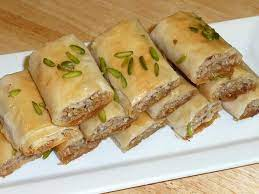

Indian Baklava

Description
Greece meets India in this filo pastry, fragrant with warm spices and a hint of rose.
Ingredients
- ⅛ teaspoon saffron threads
- 1 ½ cups sugar
- 4 ½ teaspoons rose water
- ½ cup raw walnuts
- ½ cup raw almonds
- 1 teaspoon cardamom
- ½ teaspoon nutmeg
- 1 pkg. (1 lb.) frozen filo, thawed
- 1 cup ghee (toasted clarified butter)
- 3 tablespoons shelled unsalted pistachios, finely ground
Directions
- Step 1
- Crush saffron with a mortar and pestle or on a plate with the handle of a wooden spoon. In a small saucepan, mix sugar, 3/4 cup water, and the saffron. Cook over medium-low heat, stirring often, until liquid is reduced to 1 1/2 cups, about 5 minutes. Let cool, then stir in rose water.
- Step 2
- Preheat oven to 325°. In a food processor, whirl walnuts, almonds, cardamom, and nutmeg until nuts are coarsely ground.
- Step 3
- Unroll filo with a long side facing you and cut in half into two 9- by 13-in. pieces. Stack pieces and cover with a kitchen towel to keep from drying out.
- Step 4
- Brush bottom and sides of a 9- by 13-in. baking dish with ghee. Peel off 1 sheet filo, lay in pan, and brush with ghee. Layer 12 more sheets on top, brushing each with ghee (it's okay if some sheets are torn or not fitting evenly in pan).
- Step 5
- Sprinkle half the nut mixture over filo. Lay another sheet of filo on top, gathering it to fit into pan and brushing with ghee. Repeat with 12 more sheets of filo, buttering each. Sprinkle on remaining nut mixture. Layer remaining sheets of filo on top, buttering each as before.
- Step 6
- Cut baklava into 35 squares. Bake until top is golden and crisp and edges pull away from pan sides, 1 1/2 to 1 3/4 hours. Cool pan on a rack 30 minutes.
- Step 7
- Pour saffron syrup over baklava. Let sit to absorb most of the syrup, at least 3 hours (overnight is better). Sprinkle each square with 1/4 tsp. ground pistachios.
Chef's Notes
*Find saffron, rose water, and ghee at well-stocked grocery stores and Indian markets. To make ghee, simmer butter until golden, 10 to 20 minutes. Pour through a cheesecloth-lined strainer and store airtight.
Nutrition Facts
Per Serving:153 calories; calories from fat 54%; protein 1.6g; fat 9.2g; saturated fat 4.5g; carbohydrates 16g; fiber 0.6g; sodium 63mg; cholesterol 18mg.